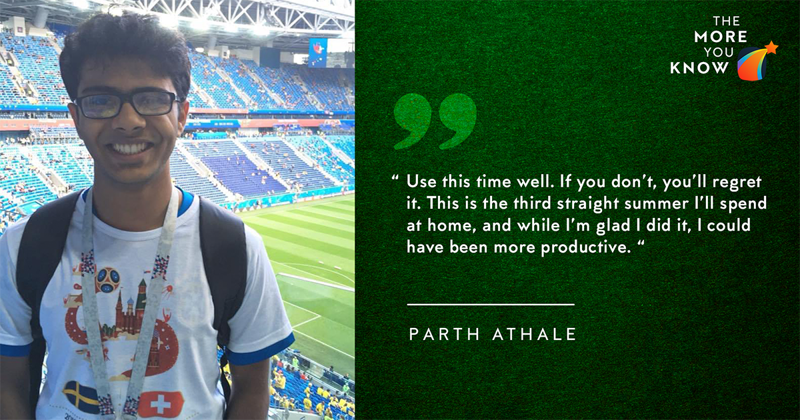

April 15, 2020
First off, this piece is hugely influenced by my experiences and opinions. So the only person for whom this is perfect advice is the 2019 Parth. Don’t worry though, you’re closer to him than you think :P
Okay, that’s it for jokes. l start with an intro; then I'll talk about the pre-interview prep and the actual interview process.

Introduction
My aim for the intern season was to land an intern at a good company. Coding, finance, analyst - I had no preference for the role. This was mainly due to the lack of significant inroads into any field. I got an internship at Deutsche Bank, where I'll (hopefully) work this summer. So this piece is mainly targeted for people thinking along similar lines.
Let's start with my profile. To be honest, it was not that much a profile last July.
My CPI (8.3) was decent. Anything >8 will give you a shot at most companies.
I had ELS Coordinator as a POR. May it be a technical project, a POR or any work experience - you need at least one such thing to navigate questions like "Walk me through your resume" or "Tell me a time when you faced hardships".
My department was math, which allowed me to go for a massive chunk of the coding/analyst/finance roles.
That's it. Pretty basic, right? I had no projects or work experience of any kind, nor had I done any advanced courses. Thankfully, in hindsight, I've realised that these things aren't necessary to land an intern. I firmly believe you need just two things -
strong communication skills and strong problem-solving skills. You should be able to express yourself in confident English and solve coding/quant problems.
Don't get me wrong; a project or a past intern is great to have. A relevant project/intern for the role you're applying for could do you wonders in your interview. But are those things absolutely necessary to land a good SPO internship? I don't think so.
Now I'll talk about firstly pre-interview prep and then about the actual interview process.
Pre-interview prep
Coding and quant are the major components of most tests.
In more than 80% of the companies, you need to code. I hadn't coded at all in my second year, and I hadn't done ESO207 either at that point. There are loads of websites out there for intern-prep coding, but I'd recommend InterviewBit. I brushed up/learned ESO207 concepts and then practised problems.
One thing I'd like to stress is that even if you have confidence in your problem-solving skills, writing actual code is different if you don't code regularly.
Pseudocode != code. So just practice and get into the habit. It helps. I ignored this aspect and didn't perform as well as I could have in the coding tests.
I gave coding tests of 7-8 companies, and a lot of them were on arrays. Optimising the time and space complexity is also essential. These concepts aren't the hardest to understand, but the practice is critical.
As for the quant section, MSO201 is more than enough. If you've not done the course, no big deal. Get the notes from someone and go through them. Also, the probability part is much more important than the stats part in terms of the number of questions asked.
Two tests I gave (Amex and Gartner) had data science questions as well. If you have any experience in that field, it'd be useful to brush up those concepts.
Some companies(Capital One) had a graph test of sorts, where you have to interpret graphical data and solve numerical questions. In general,
speed is key to all the tests - so if you're particularly slow in solving, work on it.
As for the finance roles, the companies don't expect detailed knowledge from engineering students. Investopedia is an excellent site for making sense of the basic terms like assets, liabilities, balance sheet, stocks, bonds etc. Rather than detailed technical knowledge, the
practical working of these concepts is expected.
Coming to soft skills, I was confident about my communication skills. But if you aren't, I can't overstate its importance. Mock interviews with family/friends could prove to be useful in this regard.
Interview process
I didn't have the luxury of applying for selected profiles, so I gave the tests of all the Day1 companies I was eligible for. Two companies (DB and Capital One) shortlisted me for the interview on Day 1. I think the primary reason for this is I'm not a great coder, and these companies didn't have an element of coding in their tests; the others did. DB's screening test was a Situational Judgement Test. It's a subjective test which analyses your decision-making, google to find out more.
My Capital One interview revolved around a case study, and I was pretty bad. I was asked about a case study regarding an ice-cream shop and what I'd do in various situations to maximise profit.
I have fonder memories of the DB interview(:D), and I went through four rounds. I'll list all the questions first.
Disclaimer: Finance roles will tend to have this kind of interviews, and those roles are relatively rare. Most interviews are more technical and have an element of coding problems.
Round 1
Asked me about love for literature, my favourite author.
Which industries would be affected if the river water of a city turns to wine all of a sudden?
Why did you choose the education you're pursuing?
Should people in engineering colleges do things aside from academics, and how should they be encouraged to do so?
Round 2
You own a shopping mall. From which streams do you get the revenue, and how do you increase the profit?
Probability of a road accident happening in one hour is 3/4. What is the probability of the accident in half an hour?
Ten cards are drawn out of a deck of 52. What is the probability that there are at least two aces?
Tell me about yourself (Whichever qualities I told them about myself, they asked for an instance where I used it; e.g. creativity)
Round 3
Tell me about your interest in finance (I drove the discussion to the stock market saying that's how I developed an interest in finance)
Which factors affect Lays' stock price and what are the potential threats to the company?
What are the types of financial statements?
Puzzle: Condense the range of numbers on two dice (2-12) to seven numbered cards such that you can form any dice total with two cards. (The question was pretty confusing, so don't hesitate to make it clear.)
Round 4
Why DB? (almost every company asks this, so read a bit about them and flatter them subtly)
How will you sell yourself as a contractor to the lecture hall office to polish chairs of the tutorial block?
One striking point of your resume and why do you think that it will help you at DB.
One hardship you experienced as ELS coordinator.
There are some things I learnt about the interview process from myself or my friends, so consider these as some tips:
Don't be silent in the interview for more than 5-6 seconds at a stretch. Even if you can't figure out a problem, keep on saying whatever you're thinking; the thought process helps if you can't solve it entirely.
If you are lucky enough to be shortlisted for a couple of companies on the same day, prioritise them. Put more eggs into the better basket. Otherwise, you'll be running from lecture hall to lecture hall inefficiently.
Don't hesitate to speak up if you can't understand a question. Also, you can ask for pointers for the question as well; they'll help you if you're on the right track. An interview is the last place you should be shy.
Take some bananas/biscuits bhook lagegi :P
I'd like to add two points to conclude. Firstly,
use this time well. If you don’t, you’ll regret it. Take it from me. This is the third straight summer I’ll spend at home, and while I’m glad I did it, I could have been more productive. Even if you spend 2 hours each day doing intern prep, that's awesome. I mean I know Money Heist is good, but come on. Secondly,
ask helpful seniors whatever you need. Extra stress on the 'whatever'. I'd like to think I fall in that bracket, so don't hesitate to contact me on Messenger for any doubt. That's it from my side, thanks for reading!
- Parth Athale